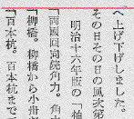
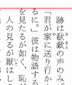
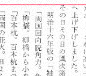
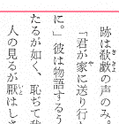
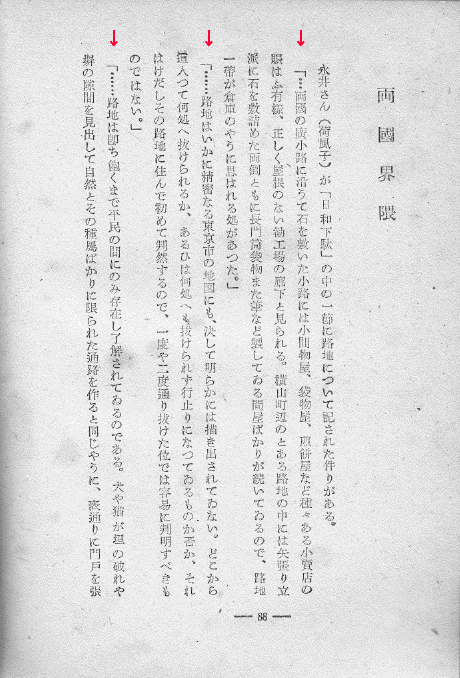
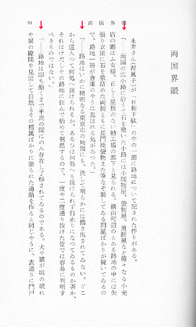
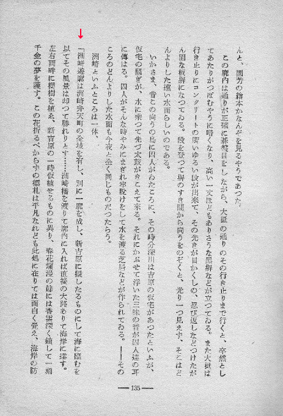
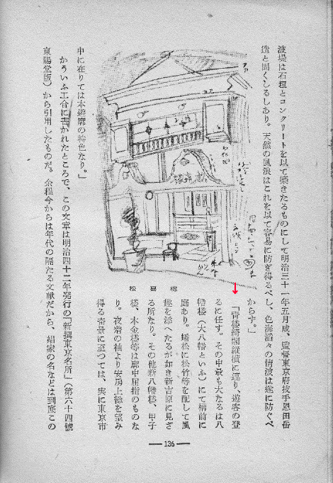
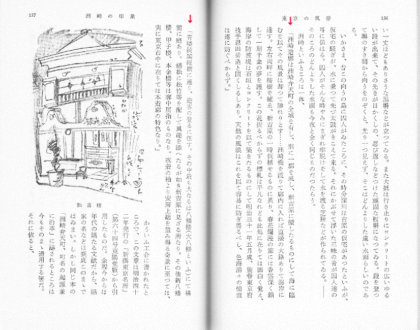

改行行頭の括弧の組み版処理について
08.12.10 作成
11.9.15 最終修正
富田倫生
青空文庫は、改行行頭の括弧を次のように入力するよう、工作員マニュアルで求めている。
【行頭の括弧の字下げ】
●一部の書籍では、新しい段落の始まりに括弧（「「」、「（」など）がくる際、１字または半字下げてある場合があります。（右の例では、１字下げてあります。）こうした場合にも、下のように、スペースは入れずに入力してください。
現在のこの方針に対して、底本の状況をより忠実にテキストに反映できるよう、「もとで1字分あいていたら、ファイルでもあける。」形に変えよう、との提案が寄せられている。
以下、行頭の括弧の組み版例を集めて検討を加えた上で、この変更提案の評価を試みる。
1 代表的な4つの処理パターン
書籍、雑誌、新聞などにおける、行頭の括弧の組み方には、以下のようなパターンがある。
1 天付きにみえるもの。

例1 木村荘八「東京の風俗」毎日新聞社、1949（昭和24）年2月20日発行、凸版印刷、258ページ
｢両國回向院角力。…
↑ 底本の形に近付けるため、この括弧は、半角のものを入力してある。
ちなみに、活版印刷では、括弧は二分サイズのものが基本だったので、改行して、縦方向の調整に用いる詰め物（クワタ）なしで括弧の活字を置くと、この形になった。
2 天から二分下がっているようにみえるもの。

例2 森鴎外「舞姫 ヰタ・セクスアリス」ちくま文庫、筑摩書房、1995（平成7）年6月22日第1刷発行、三松堂印刷、16ページ
「君が家《や》に…
↑ この括弧は、全角のものを入力してある。
｢君が家《や》に…
↑ こちらは半角アキ＋半角括弧で入力してある。
括弧は二分の活版印刷では、二分アキ＋二分括弧で実現されていた。
3 天から全角下がっているようにみえるもの。

例3 木村荘八「東京の風俗」冨山房百科文庫、冨山房、1978（昭和53）年3月29日第1刷発行、精興社、255ページ
｢両国回向院角力。…
↑ ここでは、全角アキ＋半角括弧で入力してある。
括弧は二分の活版印刷では、全角アキ＋二分括弧で実現されることが多かった。
4 天から全角＋二分下がっているようにみえるもの。

例4 森鴎外「舞姫 うたかたの記 他三篇」岩波文庫、岩波書店、1981（昭和56）年1月16日第1刷発行、精興社、15ページ
「君が家《や》に…
↑ ここでは、全角アキ＋全角括弧で入力してある。
｢君が家《や》に…
↑ ここでは全角アキ＋半角アキ＋半角括弧で入力してある。
括弧は二分の活版印刷では、全角アキ＋二分アキ＋二分括弧で実現されることが多かった。
番外 天から二分の括弧がはみ出しているもの。
例 夏目漱石「吾輩ハ猫デアル」大倉書店、服部書店、1905（明治38）年10月6日、秀英舎、49ページ、http://kindai.da.ndl.go.jp/info:ndljp/pid/888725/29
括弧が版面からはみ出している例があることを、 @2SC1815J さんのtweetで教えていただいた。「番外」として、追記する。
2 同一作品にみられる処理の“揺れ”
先に示した例1と例3は、木村荘八「東京の風俗」の二つの異本からとった。
両者を比較してみると、改行行頭括弧の処理に、いくつかの“揺れ”を確認できた。

▲例5 毎日新聞社版、88ページ。一つ目の括弧は、4。二つ目、三つ目は、3のパターンで組まれている。

▲例6 冨山房百科文庫版、91ページ。例5と同じ箇所だが、こちらはすべて、3のパターンで組んである。


▲例7 毎日新聞社版、135〜136ページ。135ページの括弧は、2のパターン。つまり、全角1字分あいていない。一方136ページは3のパターンで、全角1字分あいている。

▲例8 冨山房百科文庫版、136〜137ページ。例7と同じ箇所だが、こちらはすべて、3のパターンで組んである。
また、冒頭に掲げた「舞姫」の異本間でも、2と4というそれぞれ異なったパターンが採用されている。
これらの例が示すとおり、同一作品の同一箇所であっても、行頭括弧の組みは、さまざまに行われうる。
例5、例7のような、理由のわかりにくい“揺れ”が生じることもある。
3 変更提案の評価
行頭の括弧をどう処理するかは、組み版の歴史を通じて、方針が一つに決まらなかった要素である。
それゆえ、同じ作家による同じ作品の処理が、出版物で異なるといったことが起こる。
逆に、文庫やシリーズなどで、特定の方針が採用され、すべての作品が従う例も多い。
青空文庫では、著者の表現した内容をそのまま保存することを目指し、「底本のできるだけ忠実な再現」という作業目標を掲げている。
ただし、こう設定しているからといって、底本にみられる諸要素を、保存の必要性に関する評価なしに、闇雲に盛り込もうとしてきたわけではない。
分かりやすさや使いやすさといった要素もファイルには求められることから、作業経験を積む中で、残す残さないの判断を重ね、方針として定着させてきた。
著者の表現意図に基づく、文字遣いを含む「内容」は、再現を目指してきた要素である。
一方、組み版上の約束事に基づいて選ばれた形（新仮名ルビの拗促音大書き。底本では、折り返しで行頭にきて、使われなかった踊り字の使用。）や、もっぱら編集者の選択によると思われる、書体や文字サイズなどは、再現しないできた。
著者の意図による可能性がかなり高そうなものでも、コンピューター処理のさしさわりとなりかねない、字間割りによるレイアウト調整は、テキスト版にはうつさないことにした。
旧表記を現代表記に書き替えることも、著作権法が第20条で2項で「やむを得ないと認めらる改変」について規定しており、これを根拠として、出版界では表記変更が常識的に行われているという事態を踏まえて、受け入れることにした。
改行行頭括弧の処理のばらつきに関しても、著者の表現意図によるものではないと考え、1〜4のパターンのいずれにおいても、アキなしで括弧を入力するという、一つの方針で処理してきた。
こうしてきたことで、著者の表現意図をそぎ落としてしまうといったことは、生じていないと考えるが、いかがか。
またもし、底本の改行行頭括弧の処理に、著者の意図がかかわっているのではないかと気になる特徴があれば、例外として、その状態を記述することを検討してみればよい。
従来の方針を維持し、もし必要があれば、底本の状態を書き込んでおくということで、なんら問題はない。
「著者がすでに亡くなっている以上、底本に表われているものが著者の意図したものであると判断して入力するほかはない。」といった考え方は、電子化の大枠を示す作業方針としては、成り立ちうるかも知れない。
上面アプローチを選択すれば自動的にこの立場がとられるし、訂正注記は一切行わず、注記できる要素はもれなく書こうと試みれば、テキストによるアプローチにおいてもそうした考え方を実践できそうだ。
だがこれは、青空文庫では採用されなかったものだ。
もし本当にこのように考えて作業するのであれば、問題は改行行頭の括弧の処理にとどまらず、かなりの作業方針の見直しを迫られる。
そしてもし、本当にこう考えるのであれば、先に示した四つの処理パターンはやはり、すべて再現することにしなければ、理屈がとおらない。
全角アキの有無にはこだわるが、二分アキの差異は（しょうがないので）考慮しないことにするという主張は、一貫性を欠く。
底本の状態を忠実に記述するためにルールを変更せよというのであれば、半角括弧は使わないという約束事も変えて、すべてのパターンを再現しようと主張する方がまだ、話の筋が通る。
もちろん、改行行頭の括弧の処理パターンを、「青空文庫の目標設定からすれば、記述する必要のない要素」と素直に評価すれば、このような理屈の隘路に踏み込むこともないわけではあるが。
最後に、改行行頭括弧の入力方針を変更した際に生じかねない事態について、言及する。
青空文庫は、2002年の5月にファイルの作り方を変えた。
テキスト版に書き込む注記は、それまで、「人が読んで理解できればいい。」といった受け止めで、厳格に記述形式をそろえていたわけではなかった。
それを、XHTML版の自動作成に耐えうるものとし、また、将来的には青空文庫対応ブラウザーで組み版状態を再現できるようにとの期待を込めて、ルールを厳格化した。
1997年の開設からその時点に至るまでに、約2000程度のファイルが作られていたと思う。
これらの既存ファイルに対しても、新しい作り方の効果を及ぼそうとすれば、新しいルールにそって作り直すしかないと考えた。
そこで、新規の公開を進める中、点検グループを中心に、この旧ファイルの作り直しを進めてきたが、本稿の執筆時点に至るまで、完了していない。
作業方針の変更がどうしても必要であるなら、そこから目を背けるべきではない。
ただ、変更に伴うメリットは、青空文庫の全ファイルに期待されるし、例外なく提供したいという自発的な欲求も、生まれる。
方針変更を検討する際は、次元の異なった要素ではあるが、それによって生じる、既存ファイルの見直し、作り直し、差し替えの作業負担も念頭におかざるを得ない。
では、今回の変更提案を受け入れた際の、作業負担はどうか。
行頭括弧の処理のばらつきは、「著者の意図したものであると判断して入力するほかはない。」のであれば、例5のような揺れも事実生じうるのだから、既公開の8000近いファイルの当該箇所をすべて底本で確認し、必要な変更を施すのが筋だろう。
そうした過去ファイルの見直しは行わないというのであれば、青空文庫全体を見渡したとき、行頭の括弧がどう処理されているのかの全体像が、把握しづらくなる。
わずかの可能性を否定できないから、すべてのファイルに適用するルールを変更するという主張を無理に押し通せば、その先には、自ら好んで膨大な作業を招き寄せ、きわめて長期の混乱を招くという、意味のない苦労だけが待っている。
そんな選択は、行わない方がいい。
そんなことに割り振れる時間があるなら、入力、校正に差し向けて、一つでも多くの作品を公開に結びつけた方がよほど良い。
ここでも取り上げた、「底本のできるだけ忠実な再現」というマニュアルの表現が、どこからきて何をさしているかを、別ページで論じている。
結論だけを引けば、これを掲げて目指してきたものは、「著作者人格権の尊重」、つまり作者の表現を、著作権法が許容する範囲を超えて、書き替えるようなことはしないでおこうということだ。
青空文庫の初期にはしばしば、「作者の表現を書き替えてはいけない。」と確認する必要が生じた。
そのために盛り込まれたこの項目が求めるものは、以下のように続く当該箇所の文章の流れ、「勝手な編集はしない」、「漢字の使い方や送りがなは、「底本どおり」」「旧かなのテキストであれば旧かなのままに、時代によって変化の激しい送りがなも、底本にならって入力してください。」が明らかに示している。
青空文庫は入力に際して、底本の版面を構成する要素のうち、書き込むものと書き込まないものを選んできた。
実作業を体験すれば、著者の意図によらないと判断されたいくつかの要素で、底本をなぞらない方針が選ばれていることはすぐわかる。